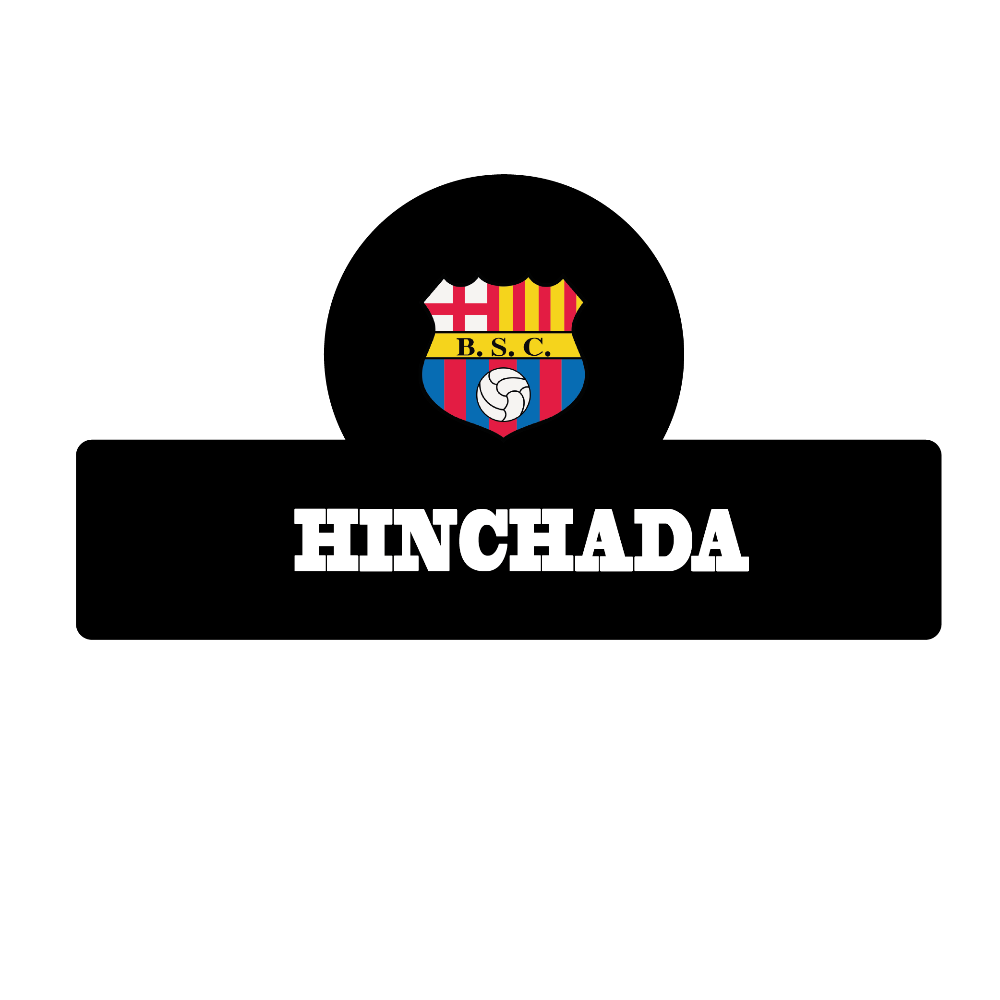
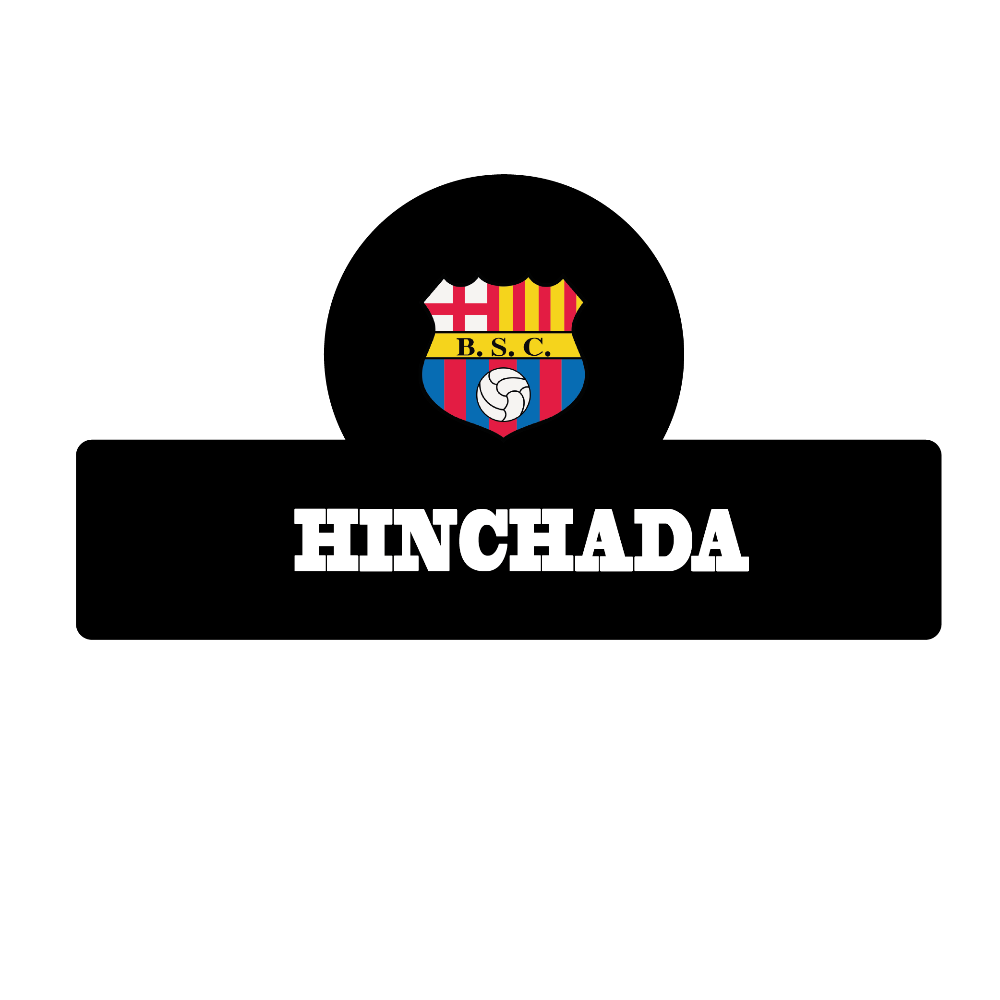

ESTADIOS |
Estadio Municipal Guayaquil (1925-1945) |
| Barcelona Sporting Club en sus primeros años, como el resto de los equipos de Guayaquil,[cita requerida] jugaba en el desaparecido Estadio Municipal Guayaquil pues en ese entonces no se contaba con una gran cantidad de estadios en la ciudad. |
Estadio George Capwell (1946-1959) |
| Una vez adaptado para encuentros de fútbol, este estadio se convertiría en la casa de los campeonatos provinciales, por lo que Barcelona Sporting Club, al igual que otros equipos, jugaría en este predio. En este escenario se comenzaría a escribir la historia de éxitos[aclaración requerida] del Ídolo del Astillero pues se dio la famosa victoria ante Millonarios en 1949, también nació el tradicional Clásico del Astillero con su rival de barrio, y dueño del estadio, el Club Sport Emelec y fue donde consiguió su primer título profesional en 1955 al ganar al cuadro eléctrico en el clásico de la última fecha. |
Estadio Modelo Guayaquil (1959-1987) |
| Debido a la mayor capacidad del Estadio Modelo, los equipos de Guayaquil comenzarían a jugar sus partidos de local en este estadio. El Barcelona fue parte del cuadrangular amistoso por la inauguración, en el cual también participaron los equipos del Emelec, Peñarol de Uruguay y Huracán de Argentina. En este estadio es donde el Barcelona realiza su debut en Copa Libertadores, además de jugar partidos amistosos con equipos como lo son el Milan, Boca Juniors, Santos, entre otros. |
Estadio Monumental Isidro Romero Carbo (1988-Actualidad) |
| El Estadio Monumental Isidro Romero Carbo, perteneciente al club, es el más grande escenario deportivo de Ecuador con una capacidad de 57 267 personas reglamentariamente. |
|

 
